1 模型压缩
学习目标：
1.了解什么是模型压缩
2.掌握模型压缩的四种主要方式
3.知道模型压缩的意义
1.1 模型压缩背景
许多应用程序都需要在设备上实时运行。例如，家庭安全摄像头上的 AI算法 必须实时处理是否有不明身份的人长期停留并通知用户。
需求：在资源受限的设备上，如何提升推理速度（模型更小、速度更快、能耗更少）？
模型压缩：减小模型规模。让模型更小、更快
模型压缩的工程目标：在目标硬件(低资源设备)上，满足精度要求的前提下，最小化推理成本。- 速度最快、资源（算力 / 显存 / 功耗）最少
1.2 模型压缩的四种主流技术
Pruning 剪枝：
删除神经网络中不重要参数。在 深度神经网络中，许多参数是冗余的。在训练之后，可以从网络中删除这些参数，而对模型性能的影响很小。作用于模型权重。
Quantization 量化：
降低模型参数存储精度。在 深度神经网络模型 中，权重存储为 float32。量化通过降低模型参数精度来压缩原始网络。例如，float32 权重可以量化为 float16、int8 甚至 int4。同时作用于模型权重和激活值。
Knowledge distillation 知识蒸馏：
使用大型数据集上训练好的大模型(教师模型)指导小模型(学生模型)的训练。
Low-rank factorization 低秩因式分解:
把一个大矩阵近似分解为两个或多个小矩阵乘积，从而减少参数量和计算量。主要作用于模型权重。
主流工程的模型压缩流程如下：
graph LR;
模型优化-->剪枝/低秩分解;
剪枝/低秩分解-->知识蒸馏恢复精度;
知识蒸馏恢复精度-->量化PTQ/QAT;
量化PTQ/QAT-->推理引擎优化部署;
1.3 模型压缩前后的对比（案例）
bert剪枝前后的推理响应时间：
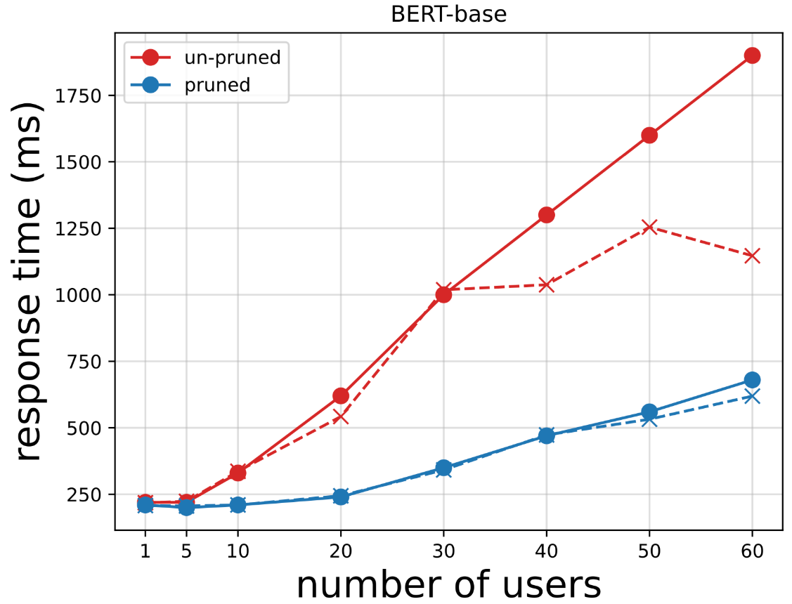
Llama量化前后的推理速度对比：
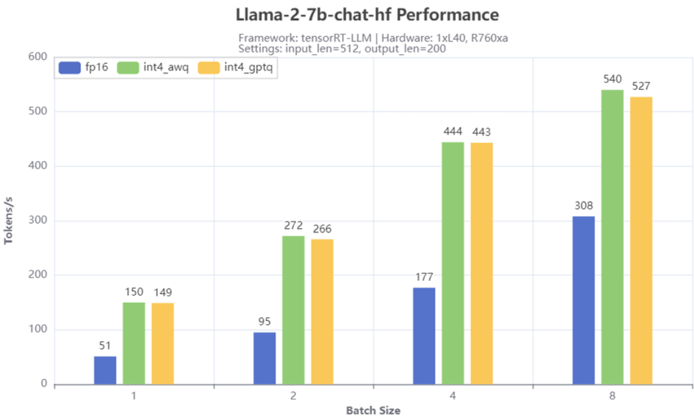
bert蒸馏前后的推理、参数对比：
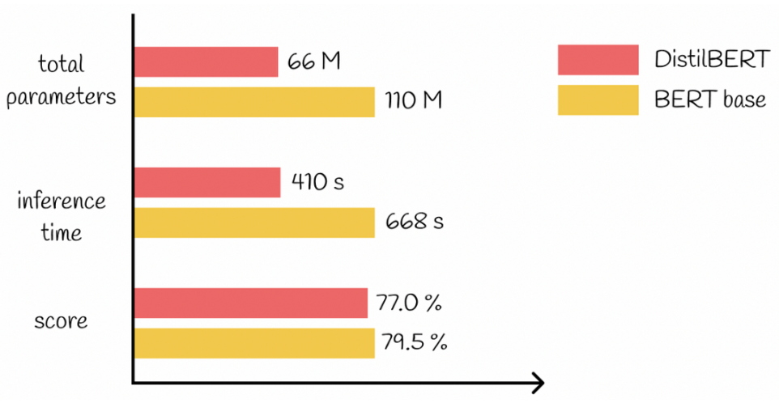
1.4 小结
- 主要介绍了模型压缩的背景以及模型压缩的主流方式。
2 模型量化
学习目标：
1.知道什么是量化？
2.能够利用pytorch完成模型量化
2.1 什么是模型量化
量化是把模型中的高精度数据（如 float32）转换为低精度数据（如 int8），从而减少模型大小和推理成本，适合部署到资源有限的设备。
常见收益：
- 模型大小约缩小 4 倍
- 内存带宽减少 2–4 倍
- 推理速度提升 2–4 倍（与硬件、模型结构有关）
1 常见低精度类型对比
| 数据类型 | 累积类型 | 值域 | 说明 |
|---|---|---|---|
| float16 | float16 | ±6.55×10⁴ | 半精度浮点，精度较低 |
| bfloat16 | float32 | ±3.39×10³⁸ | 指数范围大，精度较低 |
| int16 | int32 | -32768 到 32767 | 整数运算，性能好 |
| int8 | int32 | -128 到 127 | 最常用低精度，模型更小更快 |
量化本质是“用低精度近似值换性能”，精度可能略降，但通常可接受。
累积数据类型（Accumulation）
低精度做运算时，中间结果用更高精度保存，避免误差累积。例如 int8 计算时常用 int32 来存中间值。
2.2 量化的计算过程
| 步骤 | 对称量化-pytorch权重量化 | min-max对齐量化-pytorch激活量化 |
|---|---|---|
| 量化值范围 | [-128, 127] | [0, 255] 或 [-128,127] |
| 1.计算zero-point | 0 | $q_{\text{zero}} = \text{round}\left(-\frac{w_{\min}}{\text{scale}}\right) + q_{\min}$ |
| 2. 计算scale | $\text{scale} = \frac{\max(|w|)}{127}$ | $\text{scale} = \frac{w_{\max} - w_{\min}}{q_{\max} - q_{\min}}$ |
| 3. 计算量化值 | $q = \text{round}\left(\frac{w}{\text{scale}}\right)$ | $q = \text{round}\left(\frac{w - w_{\min}}{\text{scale}}\right) + q_{\min} = \text{round}\left(\frac{w}{\text{scale}}\right) + q_{\text{zero}}$ |
| 4. 反量化 | $w = q \times \text{scale}$ | $w = (q - q_{\min}) \times \text{scale} + w_{\min}$ |
import numpy as np # 生成1.60到1.79之间的线性数组，包含20个元素 w = np.linspace(1.60, 1.79, 20) print(w)
[1.6 1.61 1.62 1.63 1.64 1.65 1.66 1.67 1.68 1.69 1.7 1.71 1.72 1.73
1.74 1.75 1.76 1.77 1.78 1.79]
# 对称量化 # 量化值范围为[-128, 127] scale = np.max(np.abs(w))/127 print(scale) q = (np.round(w/scale)).astype(int) print(q) # 反量化 w_dequant = q * scale print(w_dequant)
0.014094488188976378
[114 114 115 116 116 117 118 118 119 120 121 121 122 123 123 124 125 126
126 127]
[1.60677165 1.60677165 1.62086614 1.63496063 1.63496063 1.64905512
1.66314961 1.66314961 1.67724409 1.69133858 1.70543307 1.70543307
1.71952756 1.73362205 1.73362205 1.74771654 1.76181102 1.77590551
1.77590551 1.79 ]
# min-max量化 # 量化值范围为[0, 255] scale = (np.max(w) - np.min(w)) / 255 print(scale) q = (np.round((w - np.min(w)) / scale)).astype(int) print(q) # 反量化 w_q = q*scale + np.min(w) print(w_q)
0.0007450980392156861
[ 0 13 27 40 54 67 81 94 107 121 134 148 161 174 188 201 215 228
242 255]
[1.6 1.60968627 1.62011765 1.62980392 1.64023529 1.64992157
1.66035294 1.67003922 1.67972549 1.69015686 1.69984314 1.71027451
1.71996078 1.72964706 1.74007843 1.74976471 1.76019608 1.76988235
1.78031373 1.79 ]
2.3 量化实现的三种方式
在工程部署中，量化是最常用的加速手段之一。它把模型参数从 float32 降为 int8/float16，在保持模型效果的前提下，显著减少模型大小并提升推理速度。
核心理解：
- 低精度（int8/float16）= 更小模型 + 更快推理
- 主要量化对象：权重，必要时也量化激活值
- 输入一般不量化，只做归一化/标准化
1 常见量化方式对比
| 方式 | 核心思想 | 量化阶段 | 量化对象 | 典型场景 | 优缺点 |
|---|---|---|---|---|---|
| 量化感知训练（Quantization Aware Training, QAT） | 训练时模拟量化误差，让模型适应量化，精度损失最小 | 训练中 | 权重 + 激活 | 医疗影像、自动驾驶等精度要求极高的模型（如 ResNet、YOLO） | 优点：精度最好；缺点：成本最高（需重新训练） |
| 静态量化（Post-Training Quantization, PTQ） | 训练后用校准数据统计量化参数(zero-point, scale)，推理全程用 int8精度 计算 | 训练后（需校准数据） | 权重 + 激活 | 图像识别类 CNN 模型（如 MobileNet），手机 / 摄像头等边缘设备 | 优点：精度稳、推理快；缺点：需准备校准数据 |
| 动态量化（Dynamic Quantization, DQ） | 训练后提前量化权重，推理时实时计算激活的量化参数(zero-point, scale) | 训练后（无需校准数据） | 权重（提前量化）激活（实时量化） | CPU 上的文本类模型（如 BERT、RNN），智能问答 / 文本分类 | 优点：最简单、改动小；缺点：精度略低 |
注意：训练阶段，权重和激活都采用float32,只是QAT在训练时采用了模拟量化，但仍然是float32。推理/预测阶段，权重和激活都采用int8。
本节实现：训练后动态量化（Dynamic Quantization）。
2.4 Pytorch的量化
使用Pytorch的动态量化(Dynamic Quantization)，即torch.quantization.quantize_dynamic(),需要在cpu中完成，需要把设备信息设置为cpu.模型大小缩小4倍，即缩小为原来的~1/4。
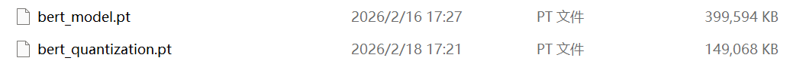
2.5 代码实现
""" 全局配置类，统一管理： 数据路径 类别信息 模型路径 训练超参数 API配置 """ # 导包 import os # 文件操作 import torch # 1.定义配置类，统一管理数据路径、类别信息、模型路径、训练超参数、API配置 class Config(): # 1.初始化函数 def __init__(self): # 1.项目数据根路径 self.root_path = r"project/01-data" # 2.数据路径 self.train_path = os.path.join(self.root_path, "train.txt") self.test_path = os.path.join(self.root_path, "test.txt") self.dev_path = os.path.join(self.root_path, "dev.txt") self.stop_words_path = os.path.join(self.root_path, "stopwords.txt") self.class_path = os.path.join(self.root_path, "class.txt") # 3.类别索引-类别名称的映射字典 self.id2class = self._get_class_dict() self.num_classes = len(self.id2class) # 4.BERT模型路径 # 预训练BERT self.bert_path = os.path.join(self.root_path, "bert-base-chinese") # 预训练BERT下游微调的模型保存路径 os.makedirs(os.path.join(self.root_path, "save_model"), exist_ok=True) self.bert_model_save_path = os.path.join(self.root_path, "save_model", "bert_model.pt") # 量化模型保存路径 self.bert_quantization_path = os.path.join(self.root_path, "save_model", "bert_quantization.pt") # 学生模型的保存路径 self.student_model_save_path = os.path.join(self.root_path, "save_model", "student_model.pt") # 剪枝模型保存路径 self.bert_pruning_path = os.path.join(self.root_path, "save_model", "bert_pruning.pt") # 5.全局配置和超参数 # 设备，优先级：CUDA > MPS > CPU self.device = torch.device( "cuda" if torch.cuda.is_available() else "mps" if torch.backends.mps.is_available() else "cpu" ) # 超参数:训练前设置的参数，训练过程中不能学习 self.epochs = 10 # 训练轮数 self.batch_size = 64 # 批次大小 self.max_length = 32 # 最大长度 self.lr = 2e-4 # 学习率 self.weight_decay = 1e-3 # 权重衰减系数 # 6.API配置 self.api_host = "127.0.0.1" self.api_port = 5000 # 2.定义私有方法，读取类别信息，构建类别索引-类别名称的映射字典 def _get_class_dict(self): with open(self.class_path, "r", encoding="utf-8") as f: return {id: class_name.strip() for id, class_name in enumerate(f)}
""" 演示 基于预训练BERT的下游文本分类微调的流程 NLP中神经网络训练的工作流： 1.构建词表 由bert_tokenizer自带的 2.准备数据集 拆分为训练集、验证集、测试集 张量 -> 数据集对象 -> 数据加载器 3.搭建神经网络模型 预训练BERT pooler_output句子表示 线性分类头nn.Linear 4.模型训练 1.前向传播 2.计算损失 3.梯度清零 4.反向传播 5.更新参数 5.模型测试 """ # 导包 import os os.environ["TF_ENABLE_ONEDNN_OPTS"] = "0" from tqdm import tqdm # 可视化训练过程 import torch # pytorch框架 import torch.nn as nn # 神经网络模块 import torch.optim as optim # 优化器模块，提供各种优化器，比如SGD,Adam,AdamW from torch.utils.data import Dataset, DataLoader from transformers import BertModel, BertTokenizer, BertConfig # huggingface的transformers框架的具体模型方法 # from config import Config # 自定义的全局配置类 import time # 计算 accuracy准确率 和 F1(精确率和召回率的调和平均) from sklearn.metrics import accuracy_score, f1_score import matplotlib.pyplot as plt # 绘图 # 设置中文字体 plt.rcParams['font.sans-serif'] = ['SimHei'] # 微软雅黑 plt.rcParams['axes.unicode_minus'] = False # 解决负号显示问题 # 0.全局配置 # 创建Config()实例 config = Config() # 创建BERT模型对象，分词器对象，配置对象 bert_tokenizer = BertTokenizer.from_pretrained(config.bert_path) bert_config = BertConfig.from_pretrained(config.bert_path) # 1.构建词表 # 由bert_tokenizer自带的 # print(bert_tokenizer.vocab) # print(len(bert_tokenizer.vocab)) # print(bert_tokenizer.tokenize("从前有一份真挚的爱情放在我的面前")) # print(bert_tokenizer.convert_tokens_to_ids(bert_tokenizer.tokenize("从前有一份真挚的爱情放在我的面前"))) # 2.准备数据集 # 2.1 定义函数，加载数据，返回 文本-标签索引 的元组列表 def load_raw_data(file_path): """ 加载数据文件，返回 文本-标签索引的元组列表 :param file_path:原始文件路径 :return: 元组列表，[(状元心经：考前一周重点是回顾和整理,3),(美股评论：SUN的苦涩曙光,2),...] """ # 1.初始化结果列表 results = [] # 2.加载源文件，并处理 with open(file_path, 'r', encoding='utf-8') as f: # 1.遍历行，获取每行 for line in f: # 2.去除首尾空白 line = line.strip() # 3.跳过空行, None, "" if not line: continue # 4.分割文本和标签，\t text, label = line.split('\t') # 5.添加结果到结果列表中 results.append((text, int(label))) # 3.返回结果 return results # 2.2 自定义数据集类，构造输入输出 class MyDataset(Dataset): # 1.初始化方法 def __init__(self, data_list): # 1.初始化父类成员 super().__init__() # 2.初始化数据列表 self.data_list = data_list # 2.len方法，返回数据集大小 def __len__(self): return len(self.data_list) # 3.getitem方法，返回指定索引的样本，输入-输出 def __getitem__(self, index): text, label = self.data_list[index] return text, label # 2.3 定义整理函数，批量处理数据 def collate_fn(batch): """ 对一个batch的样本进行BERT分词器编码： 文本 -> 分词 -> padding -> tensor: input_ids, attention_mask, token_type_ids(句子id，这里不需要) :param batch: 一个批次的样本, 长度batch_size, [(text,label),(text,label),...] :return: 元组, (input_ids, attention_mask, labels) input_ids: (batch_size, max_length), token的id attention_mask: (batch_size, max_length)，注意力掩码 labels: (batch_size,),标签 """ # 1.获取文本和标签的元组 texts, labels = zip(*batch) # 2.BERT分词器编码 output = bert_tokenizer( list(texts), # 输入文本列表 padding=True, # 填充, 按照batch内最大长度进行填充 truncation=True, # 截断，阶段超出最大长度max_length的文本 max_length=config.max_length, # 最大长度 return_tensors='pt', # 返回张量 ) # 3.获取张量 input_ids = output['input_ids'] attention_mask = output['attention_mask'] # print(input_ids.shape) # print(attention_mask.shape) labels = torch.tensor(labels,dtype=torch.long) # 4.返回 return input_ids, attention_mask, labels # 2.4 构建数据加载器 def build_dataloader(): # 张量 -> 数据集对象 -> 数据加载器 # 1.加载源数据 train_data = load_raw_data(config.train_path) dev_data = load_raw_data(config.dev_path) test_data = load_raw_data(config.test_path) # 2.构建数据集对象 train_dataset = MyDataset(train_data) dev_dataset = MyDataset(dev_data) test_dataset = MyDataset(test_data) # 3.构建数据加载器对象 train_dataloader = DataLoader( train_dataset, batch_size=config.batch_size, shuffle=True, collate_fn=collate_fn # 批量处理数据 ) dev_dataloader = DataLoader( dev_dataset, batch_size=config.batch_size, shuffle=False, collate_fn=collate_fn ) test_dataloader = DataLoader( test_dataset, batch_size=config.batch_size, shuffle=False, collate_fn=collate_fn ) # 4.返回结果 return train_dataloader, dev_dataloader, test_dataloader # 3.搭建神经网络模型 # 基于预训练的BERT模型实现下游分类模型 class MyBertClassifier(nn.Module): # 1.初始化方法，定义网络层 def __init__(self): super().__init__() # 1.初始化预训练BERT self.bert = BertModel.from_pretrained(config.bert_path) # 2.初始化线性分类头，输入维度hidden_size, 输出维度num_classes self.linear1 = nn.Linear(bert_config.hidden_size, config.num_classes) # 3.可选：冻结bert层参数，在训练开始时冻结，训练中期解冻 # for param in self.bert.parameters(): # param.requires_grad = False # 2.forward方法，实现前向传播 def forward(self, input_ids, attention_mask): """ 根据传入的input_ids, attention_mask，前向传播返回预测logits :param input_ids: 输入文本分词之后的token id,(batch_size, max_length) :param attention_mask: 输入文本的注意力掩码，填充掩码，(batch_size, max_length) :return: logits预测分数(batch_size, num_classes) """ # 1.把输入input_ids和attention_mask传入BERT模型，获取输出 output = self.bert( input_ids=input_ids, attention_mask=attention_mask, ) # 2.获取pooler_output，句子级表示 pooler_output = output.pooler_output # (batch_size, hidden_size) # 3.传入线性分类头，获取预测分数logits logits = self.linear1(pooler_output) # (batch_size, num_classes) return logits # 4.模型训练 # 4.1 训练一个轮次 def train_one_epoch(model, train_dataloader, loss_fn, optimizer): # 1.设置训练模式 model.train() # 告诉模型现在是训练模式，要开启dropout等特殊网络层 # 2.初始化 总损失，总样本数，预测结果列表，真实标签列表 total_loss = 0.0 total_samples = 0 total_preds = [] total_labels = [] # 3.遍历数据加载器 for batch in tqdm(train_dataloader, desc="Training"): # 0.迁移数据到设备 input_ids, attention_mask, labels = [x.to(config.device) for x in batch] # 1.前向传播 logits = model(input_ids, attention_mask) # (batch_size, num_classes) # 2.计算损失 loss = loss_fn(logits, labels) # 3.梯度清零 optimizer.zero_grad() # 4.反向传播 loss.backward() # 5.更新参数 optimizer.step() # 6.记录结果 total_loss += loss.item()*labels.shape[0] total_samples += labels.shape[0] y_pred_class = logits.argmax(dim=-1).cpu().tolist() # (batch_size,) total_preds.extend(y_pred_class) total_labels.extend(labels.cpu().tolist()) # 4.计算训练过程指标，平均损失、准确率、F1(macro)分数 avg_loss = total_loss / total_samples avg_acc = accuracy_score(total_labels, total_preds) # macro宏平均：统计所有类别的F1分数，然后求平均，类别平等，不考虑类别样本不均衡，也就小类别和大类别的权重一样； # micro微平均：统计所有样本的预测结果，然后求指标，样本平均，考虑类别样本不均衡，大类别的权重大； avg_f1 = f1_score(total_labels, total_preds, average='macro') # 5.返回计算结果 return avg_loss, avg_acc, avg_f1 # 4.2 模型评估 @torch.no_grad() # 关闭梯度计算，节省20%的显存 def evaluate(model, val_dataloader, loss_fn): # 1.设置评估模式 model.eval() # 告诉模型现在是评估模式，要关闭dropout等特殊网络层 # 2.初始化 总损失，总样本数，预测结果列表，真实标签列表 total_loss = 0.0 total_samples = 0 total_preds = [] total_labels = [] # 3.遍历数据加载器 for batch in tqdm(val_dataloader, desc="Evaluating"): # 0.迁移数据到设备 input_ids, attention_mask, labels = [x.to(config.device) for x in batch] # 1.前向传播 logits = model(input_ids, attention_mask) # (batch_size, num_classes) # 2.计算损失 loss = loss_fn(logits, labels) # # 3.梯度清零 # optimizer.zero_grad() # # 4.反向传播 # loss.backward() # # 5.更新参数 # optimizer.step() # 6.记录结果 total_loss += loss.item()*labels.shape[0] total_samples += labels.shape[0] y_pred_class = logits.argmax(dim=-1).cpu().tolist() # (batch_size,) total_preds.extend(y_pred_class) total_labels.extend(labels.cpu().tolist()) # 4.计算过程指标，平均损失、准确率、F1(macro)分数 avg_loss = total_loss / total_samples avg_acc = accuracy_score(total_labels, total_preds) # macro宏平均：统计所有类别的F1分数，然后求平均，类别平等，不考虑类别样本不均衡，也就小类别和大类别的权重一样； # micro微平均：统计所有样本的预测结果，然后求指标，样本平均，考虑类别样本不均衡，大类别的权重大； avg_f1 = f1_score(total_labels, total_preds, average='macro') # 5.返回计算结果 return avg_loss, avg_acc, avg_f1 # 4.3 训练主函数 def train(): # 1.创建数据加载器 train_dataloader, dev_dataloader, _ = build_dataloader() # 2.创建神经网络对象 model = MyBertClassifier().to(config.device) # 3.定义损失函数和优化器 loss_fn = nn.CrossEntropyLoss() optimizer = optim.AdamW(model.parameters(), lr=config.lr, weight_decay=config.weight_decay) # 4.初始化训练过程指标 # 初始化最优f1分数，用于选择最优模型 best_f1 = 0.0 # 记录训练过程指标，用于绘图 history = { 'train_loss': [], 'train_acc': [], 'train_f1': [], 'val_loss': [], 'val_acc': [], 'val_f1': [] } # 5.开始训练，遍历轮数 for epoch in range(config.epochs): # 1.训练一个轮次 train_loss, train_acc, train_f1 = train_one_epoch( model, train_dataloader, loss_fn, optimizer ) # 2.评估当前模型 val_loss, val_acc, val_f1 = evaluate( model, dev_dataloader, loss_fn ) # 3.打印训练过程指标 print(f"Epoch: {epoch+1}/{config.epochs} | " f"Train Loss: {train_loss:.4f} | " f"Train Acc: {train_acc:.4f} | " f"Train F1: {train_f1:.4f} | " f"Val Loss: {val_loss:.4f} | " f"Val Acc: {val_acc:.4f} | " f"Val F1: {val_f1:.4f}") # 4.记录训练过程指标 history['train_loss'].append(train_loss) history['train_acc'].append(train_acc) history['train_f1'].append(train_f1) history['val_loss'].append(val_loss) history['val_acc'].append(val_acc) history['val_f1'].append(val_f1) # 5.根据f1分数来保存最优模型 if val_f1 > best_f1: # 1.更新最优f1分数 best_f1 = val_f1 # 2.保存最优模型参数 torch.save(model.state_dict(), config.bert_model_save_path) print(f"保存最优模型为: {config.bert_model_save_path}") # 6.返回训练结果，用于可视化 return history # 4.4 绘制训练曲线 def plot_history(history): # 1.设置x轴刻度，epoch轮次 epochs = range(1, len(history['train_loss'])+1) # 2.设置画布大小 plt.figure(figsize=(15, 5)) # 3.绘制loss曲线 plt.subplot(1, 3, 1) plt.plot(epochs, history['train_loss'], label='train_loss') plt.plot(epochs, history['val_loss'], label='val_loss') plt.title('Loss Curve') plt.xlabel('Epoch') plt.ylabel('Loss') plt.grid(True) plt.legend() # 4.绘制acc曲线 plt.subplot(1, 3, 2) plt.plot(epochs, history['train_acc'], label='train_acc') plt.plot(epochs, history['val_acc'], label='val_acc') plt.title('Acc Curve') plt.xlabel('Epoch') plt.ylabel('Acc') plt.grid(True) plt.legend() # 5.绘制f1曲线 plt.subplot(1, 3, 3) plt.plot(epochs, history['train_f1'], label='train_f1') plt.plot(epochs, history['val_f1'], label='val_f1') plt.title('F1 Curve') plt.xlabel('Epoch') plt.ylabel('F1') plt.grid(True) plt.legend() plt.tight_layout() plt.show()
<本地用户目录>\.conda\envs\nlp_cpu\lib\site-packages\tqdm\auto.py:21: TqdmWarning: IProgress not found. Please update jupyter and ipywidgets. See https://ipywidgets.readthedocs.io/en/stable/user_install.html
from .autonotebook import tqdm as notebook_tqdm
W0403 19:57:12.564000 38008 site-packages\torch\distributed\elastic\multiprocessing\redirects.py:29] NOTE: Redirects are currently not supported in Windows or MacOs.
""" 演示 bert模型的 动态量化DQ 需要掌握的API: torch.quantization.quantize_dynamic() 注意： 新建一个虚拟环境nlp_cpu 安装cpu版本的pytorch, pip3 install torch torchvision 其余包自己搞定 """ # 导包 import torch from torch import nn # from config import Config # from bert_train import MyBertClassifier, evaluate, build_dataloader # 0.查看量化引擎 # 常见的量化引擎 onednn(AMD/intel), fbgemm(intel), qnnpack(apple) print(torch.backends.quantized.supported_engines) # torch.backends.quantized.engine = 'onednn' # 1.创建Config对象 config = Config() # 2.构建数据加载器 train_dataloader, dev_dataloader, test_dataloader = build_dataloader() # 3.加载模型 model = MyBertClassifier() model.load_state_dict(torch.load( config.bert_model_save_path, weights_only=True, map_location=torch.device('cpu') )) # print(f"量化前模型：{model}") # 4.评估量化前模型 avg_loss, avg_acc, avg_f1 = evaluate( model, test_dataloader, loss_fn=nn.CrossEntropyLoss() ) print(f"量化前f1分数：{avg_f1}") # 5.进行动态量化 # 设为评估模式 model.eval() # 参数1：模型 # 参数2：需要动态量化的层，这里是全连接层 # 参数3：要量化后的数据类型 quantized_model = torch.quantization.quantize_dynamic( model, {nn.Linear}, dtype=torch.qint8 ) # print(f"量化后模型：{quantized_model}") # 6.评估量化后模型 avg_loss, avg_acc, avg_f1 = evaluate( quantized_model, test_dataloader, loss_fn=nn.CrossEntropyLoss() ) print(f"量化后f1分数：{avg_f1}") # 7.保存量化后模型参数 torch.save(quantized_model.state_dict(), config.bert_quantization_path) print(f"保存量化模型到：{config.bert_quantization_path}")
['onednn']
Loading weights: 100%|██████████| 199/199 [00:00<00:00, 442.70it/s, Materializing param=pooler.dense.weight]
BertModel LOAD REPORT from: project/01-data\bert-base-chinese
Key | Status | |
-------------------------------------------+------------+--+-
cls.seq_relationship.bias | UNEXPECTED | |
cls.predictions.transform.LayerNorm.weight | UNEXPECTED | |
cls.seq_relationship.weight | UNEXPECTED | |
cls.predictions.transform.dense.weight | UNEXPECTED | |
cls.predictions.transform.dense.bias | UNEXPECTED | |
cls.predictions.bias | UNEXPECTED | |
cls.predictions.transform.LayerNorm.bias | UNEXPECTED | |
Notes:
- UNEXPECTED :can be ignored when loading from different task/architecture; not ok if you expect identical arch.
Evaluating: 100%|██████████| 157/157 [01:38<00:00, 1.60it/s]
<本地用户目录>\AppData\Local\Temp\ipykernel_41084\113655945.py:46: DeprecationWarning: torch.ao.quantization is deprecated and will be removed in 2.10.
For migrations of users:
1. Eager mode quantization (torch.ao.quantization.quantize, torch.ao.quantization.quantize_dynamic), please migrate to use torchao eager mode quantize_ API instead
2. FX graph mode quantization (torch.ao.quantization.quantize_fx.prepare_fx,torch.ao.quantization.quantize_fx.convert_fx, please migrate to use torchao pt2e quantization API instead (prepare_pt2e, convert_pt2e)
3. pt2e quantization has been migrated to torchao (https://github.com/pytorch/ao/tree/main/torchao/quantization/pt2e)
see https://github.com/pytorch/ao/issues/2259 for more details
quantized_model = torch.quantization.quantize_dynamic(
量化前f1分数：0.9398408127354492
Evaluating: 100%|██████████| 157/157 [00:36<00:00, 4.28it/s]
量化后f1分数：0.9325105657068281
保存量化模型到：project/01-data\save_model\bert_quantization.pt
模型文件大小缩减了2.6倍, F1值下降了不到0.01!
2.6 小结
- 实现了模型的动态量化, 在CPU上测试了量化后的模型表现, 验证了BERT模型具有良好的鲁棒性.
- 对比BERT模型量化前后的大小, 说明BERT模型的压缩率很高, 同时还能保持模型性能.
- 注意: 如果将模型加载到GPU上直接量化, 会报错:
# 2 这说明动态量化目前在Pytorch平台上仅仅支持CPU上的操作! untimeError: Could not run 'quantized::linear_prepack' with arguments from the 'UNKNOWN_TENSOR_TYPE_ID' backend. 'quantized::linear_prepack' is only available for these backends: [QuantizedCPU].
3 知识蒸馏(Knowledge Distillation)
3.1 学习目标
- 理解知识蒸馏的核心思想
- 掌握教师模型、学生模型、软标签、KL散度等核心概念
- 掌握软标签蒸馏的代码实现
3.2 什么是知识蒸馏
核心问题：如何用小模型达到大模型的效果？
知识蒸馏通过让训练好的大模型（教师）指导小模型（学生）的学习，实现模型压缩。最早由 Hinton 在 2015 年提出，现已成为工业部署的标准方案。
核心思想： - 学生不仅学习真实标签，还学习教师的“预测分布”
关键优势：
- 模型大小减小 10-100 倍
- 推理速度提升 5-10 倍
- 精度损失控制在可接受范围内
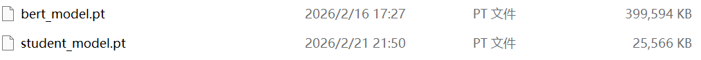
3.3 核心概念
| 概念 | 定义 | 示例 |
|---|---|---|
| 教师模型 | 参数量大、性能好的已训练模型 | BERT-Large、ResNet-152 |
| 学生模型 | 参数量小、待训练的轻量模型 | DistilBERT、MobileNet |
| 硬标签 | 真实的确定性分类标签（one-hot） | [0, 1, 0]（类别1） |
| 软标签 | 教师模型的概率分布（柔和） | [0.2, 0.7, 0.1] |
| 温度 T | 控制概率分布平滑度的参数 | T=1（无平滑），T=4（高平滑） |
软标签的优势：保留教师模型的"不确定性信息"，学生可学到类别间的相似度关系。
类比：比如判断答题分数，硬标签只有对错（0或1），软标签是分数（0.2、0.7、0.1），可以给出答对的程度信息。
3.4 如何实现 - 不同蒸馏方式
| 方式 | 是否使用教师 | 学习目标 | 损失函数形式 | 工程建议 |
|---|---|---|---|---|
| 普通训练（Baseline） | ❌ | 学生学习真实标签 | CE | 必须先做基线对比 |
| 软标签蒸馏 | ✅ | 学生模仿教师输出分布 | α·T²·KL + (1-α)·CE | ⭐ 工业最常用 |
| 中间层蒸馏 | ✅ | 学生对齐教师隐藏特征 | k1*KL + k2*CE + k3*MSE | 提升精度上限 |
| 可学习加权蒸馏 | ✅ | 自动学习多损失权重 | Linear([CE, KL, MSE]) | 减少人工调参 |
软标签蒸馏公式：
设真实标签为 $y_{true}$，学生模型输出 logits 为 $z_s$，教师模型输出 logits 为 $z_t$：
$$L_{\text{total}} = \alpha \cdot T^2 \cdot KL(p_t, p_s) + (1-\alpha) \cdot CE(y_{true}, z_s)$$
其中： - $KL$：KL散度损失，衡量教师输出概率分布(软标签)与学生输出概率分布的差异 $$KL(p_t, p_s) = \sum p_t \log\frac{p_t}{p_s} = \sum p_t \log p_t - \sum p_t \log p_s = - \sum p_t \log p_s + C , \quad p = \text{softmax}(z/T)$$ - $CE$：交叉熵损失，衡量真实标签与学生输出的差异 $$CE(y_{true}, z_s) = -\sum y_{true} \log(\text{softmax}(z_s))$$ - $\alpha$：软标签权重系数（通常 0.5-0.9，工业常用 0.7） - $T$：温度参数（通常 2-10，值越大软标签越平滑） - $T^2$：温度平方项，用于平衡梯度尺度
为什么KL散度要乘以温度参数 $T^2$？ - 试验结论显示，添加 $T^2$ 提高训练效果 - 数学原理解释： KL散度对zs的梯度为： $$\frac{\partial KL}{\partial z_s} = \frac{1}{T} (p_s - p_t)$$ 添加 $T^2$ 后，KL散度的梯度变为： $$\frac{\partial (T^2 * KL)}{\partial z_s} = T (p_s - p_t)$$
import torch pt = torch.tensor([0.3, 0.6, 0.1]) # (3) ps = torch.tensor([0.4, 0.5, 0.1]) kl_loss = torch.dot(pt,torch.log(pt/ps)) print(kl_loss)
tensor(0.0231)
- 工程建议
- 选择教师模型：模型效果强于学生(精度差距≥2~5%)
- 调参顺序：先固定 α=0.7、T=4，再细调
- 验证效果：对比学生单独训练 vs 蒸馏训练的 Acc/F1
- 实战组合：蒸馏 + 量化，压缩效果最优（2-10 倍）
3.5 代码实现
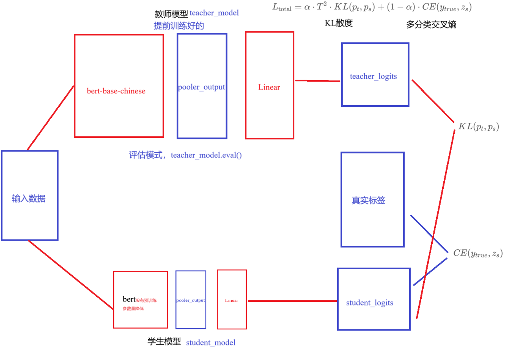
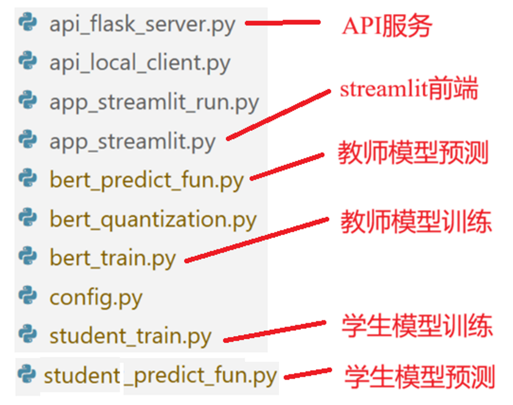
""" 演示 学生模型的训练过程，采用软标签蒸馏的模型压缩方式进行训练 NLP中神经网络训练的工作流： 1.构建词表 由bert_tokenizer自带的 2.准备数据集 拆分为训练集、验证集、测试集 张量 -> 数据集对象 -> 数据加载器 3.搭建神经网络模型 自定义BERT pooler_output句子表示 线性分类头nn.Linear 4.模型训练 1.前向传播 2.计算损失 3.梯度清零 4.反向传播 5.更新参数 5.模型测试 """ # 导包 import os os.environ["TF_ENABLE_ONEDNN_OPTS"] = "0" from tqdm import tqdm # 可视化训练过程 import torch # pytorch框架 import torch.nn as nn # 神经网络模块 import torch.nn.functional as F # 函数模块 import torch.optim as optim # 优化器模块，提供各种优化器，比如SGD,Adam,AdamW from torch.utils.data import Dataset, DataLoader from transformers import BertModel, BertTokenizer, BertConfig # huggingface的transformers框架的具体模型方法 # from config import Config # 自定义的全局配置类 import time # 计算 accuracy准确率 和 F1(精确率和召回率的调和平均) from sklearn.metrics import accuracy_score, f1_score import matplotlib.pyplot as plt # 绘图 # 设置中文字体 plt.rcParams['font.sans-serif'] = ['SimHei'] # 微软雅黑 plt.rcParams['axes.unicode_minus'] = False # 解决负号显示问题 # 0.全局配置 # 创建Config()实例 config = Config() # 创建BERT模型对象，分词器对象，配置对象 bert_tokenizer = BertTokenizer.from_pretrained(config.bert_path) bert_config = BertConfig.from_pretrained(config.bert_path) # 全局常数 T = 4.0 ALPHA = 0.7 # 1.构建词表 # 由bert_tokenizer自带的 # print(bert_tokenizer.vocab) # print(len(bert_tokenizer.vocab)) # print(bert_tokenizer.tokenize("从前有一份真挚的爱情放在我的面前")) # print(bert_tokenizer.convert_tokens_to_ids(bert_tokenizer.tokenize("从前有一份真挚的爱情放在我的面前"))) # 2.准备数据集 # 2.1 定义函数，加载数据，返回 文本-标签索引 的元组列表 def load_raw_data(file_path): """ 加载数据文件，返回 文本-标签索引的元组列表 :param file_path:原始文件路径 :return: 元组列表，[(状元心经：考前一周重点是回顾和整理,3),(美股评论：SUN的苦涩曙光,2),...] """ # 1.初始化结果列表 results = [] # 2.加载源文件，并处理 with open(file_path, 'r', encoding='utf-8') as f: # 1.遍历行，获取每行 for line in f: # 2.去除首尾空白 line = line.strip() # 3.跳过空行, None, "" if not line: continue # 4.分割文本和标签，\t text, label = line.split('\t') # 5.添加结果到结果列表中 results.append((text, int(label))) # 3.返回结果 return results # 2.2 自定义数据集类，构造输入输出 class MyDataset(Dataset): # 1.初始化方法 def __init__(self, data_list): # 1.初始化父类成员 super().__init__() # 2.初始化数据列表 self.data_list = data_list # 2.len方法，返回数据集大小 def __len__(self): return len(self.data_list) # 3.getitem方法，返回指定索引的样本，输入-输出 def __getitem__(self, index): text, label = self.data_list[index] return text, label # 2.3 定义整理函数，批量处理数据 def collate_fn(batch): """ 对一个batch的样本进行BERT分词器编码： 文本 -> 分词 -> padding -> tensor: input_ids, attention_mask, token_type_ids(句子id，这里不需要) :param batch: 一个批次的样本, 长度batch_size, [(text,label),(text,label),...] :return: 元组, (input_ids, attention_mask, labels) input_ids: (batch_size, max_length), token的id attention_mask: (batch_size, max_length)，注意力掩码 labels: (batch_size,),标签 """ # 1.获取文本和标签的元组 texts, labels = zip(*batch) # 2.BERT分词器编码 output = bert_tokenizer( list(texts), # 输入文本列表 padding=True, # 填充, 按照batch内最大长度进行填充 truncation=True, # 截断，阶段超出最大长度max_length的文本 max_length=config.max_length, # 最大长度 return_tensors='pt', # 返回张量 ) # 3.获取张量 input_ids = output['input_ids'] attention_mask = output['attention_mask'] # print(input_ids.shape) # print(attention_mask.shape) labels = torch.tensor(labels,dtype=torch.long) # 4.返回 return input_ids, attention_mask, labels # 2.4 构建数据加载器 def build_dataloader(): # 张量 -> 数据集对象 -> 数据加载器 # 1.加载源数据 train_data = load_raw_data(config.train_path) dev_data = load_raw_data(config.dev_path) test_data = load_raw_data(config.test_path) # 2.构建数据集对象 train_dataset = MyDataset(train_data) dev_dataset = MyDataset(dev_data) test_dataset = MyDataset(test_data) # 3.构建数据加载器对象 train_dataloader = DataLoader( train_dataset, batch_size=config.batch_size, shuffle=True, collate_fn=collate_fn # 批量处理数据 ) dev_dataloader = DataLoader( dev_dataset, batch_size=config.batch_size, shuffle=False, collate_fn=collate_fn ) test_dataloader = DataLoader( test_dataset, batch_size=config.batch_size, shuffle=False, collate_fn=collate_fn ) # 4.返回结果 return train_dataloader, dev_dataloader, test_dataloader # 3.搭建神经网络模型 # 3.1 教师模型，基于预训练的BERT模型实现下游分类模型 class MyBertClassifier(nn.Module): # 1.初始化方法，定义网络层 def __init__(self): super().__init__() # 1.初始化预训练BERT self.bert = BertModel.from_pretrained(config.bert_path) # 2.初始化线性分类头，输入维度hidden_size, 输出维度num_classes self.linear1 = nn.Linear(bert_config.hidden_size, config.num_classes) # 3.可选：冻结bert层参数，在训练开始时冻结，训练中期解冻 # for param in self.bert.parameters(): # param.requires_grad = False # 2.forward方法，实现前向传播 def forward(self, input_ids, attention_mask): """ 根据传入的input_ids, attention_mask，前向传播返回预测logits :param input_ids: 输入文本分词之后的token id,(batch_size, max_length) :param attention_mask: 输入文本的注意力掩码，填充掩码，(batch_size, max_length) :return: logits预测分数(batch_size, num_classes) """ # 1.把输入input_ids和attention_mask传入BERT模型，获取输出 output = self.bert( input_ids=input_ids, attention_mask=attention_mask, ) # 2.获取pooler_output，句子级表示 pooler_output = output.pooler_output # (batch_size, hidden_size) # 3.传入线性分类头，获取预测分数logits logits = self.linear1(pooler_output) # (batch_size, num_classes) return logits # 3.2 学生模型，基于自定义的BERT模型实现下游分类模型 class MyStudentClassifier(nn.Module): # 1.初始化方法，定义网络层 def __init__(self): super().__init__() # 1.初始化自定义的BERT模型，不使用预训练BERT config_student = BertConfig( vocab_size=bert_config.vocab_size, # 词表大小，使用预训练BERT的词表 hidden_size=256, # 隐藏层维度 num_hidden_layers=2, # 隐藏层数量 num_attention_heads=8, # 注意力头数量 intermediate_size=1024, # 中间层维度 max_position_embeddings=config.max_length, # 最大长度，保持一致 num_labels=config.num_classes, # 类别数量，保持一致 ) self.bert = BertModel(config_student) # 2.初始化线性层 self.linear1 = nn.Linear(config_student.hidden_size, config.num_classes) # 2.forward方法，实现前向传播 def forward(self, input_ids, attention_mask): """ 根据传入的input_ids, attention_mask，前向传播返回预测logits :param input_ids: 输入文本分词之后的token id,(batch_size, max_length) :param attention_mask: 输入文本的注意力掩码，填充掩码，(batch_size, max_length) :return: logits预测分数(batch_size, num_classes) """ # 1.把输入input_ids和attention_mask传入BERT模型，获取输出 output = self.bert( input_ids=input_ids, attention_mask=attention_mask, ) # 2.获取pooler_output，句子级表示 pooler_output = output.pooler_output # (batch_size, hidden_size) # 3.传入线性分类头，获取预测分数logits logits = self.linear1(pooler_output) # (batch_size, num_classes) return logits # 4.模型训练 # 4.1 训练一个轮次 def train_one_epoch( student_model, teacher_model, train_dataloader, ce_loss_fn, kl_loss_fn, optimizer, scheduler): # 1.设置学生模型为训练模式，教师模型已经为评估模式 student_model.train() # 告诉模型现在是训练模式，要开启dropout等特殊网络层 # 2.初始化 总损失，总样本数，预测结果列表，真实标签列表 total_loss = 0.0 total_samples = 0 total_preds = [] total_labels = [] # 3.遍历数据加载器 for batch in tqdm(train_dataloader, desc="Training"): # 0.迁移数据到设备 input_ids, attention_mask, labels = [x.to(config.device) for x in batch] # 1.前向传播 # 1.1 教师模型预测 with torch.no_grad(): teacher_logits = teacher_model(input_ids, attention_mask) # (batch_size, num_classes) # 1.2 学生模型预测 student_logits = student_model(input_ids, attention_mask) # (batch_size, num_classes) # 2.计算损失 # 2.1 计算CE损失 ce_loss = ce_loss_fn(student_logits, labels) # 2.2 计算KL损失 kl_loss = kl_loss_fn(F.log_softmax(student_logits/T, dim=-1), F.softmax(teacher_logits, dim=-1)) # 2.3 总损失 loss = (1-ALPHA)*ce_loss + ALPHA*(T**2)*kl_loss # 3.梯度清零 optimizer.zero_grad() # 4.反向传播 loss.backward() # 5.更新参数 optimizer.step() scheduler.step() # 6.记录结果 total_loss += loss.item()*labels.shape[0] total_samples += labels.shape[0] y_pred_class = student_logits.argmax(dim=-1).cpu().tolist() # (batch_size,) total_preds.extend(y_pred_class) total_labels.extend(labels.cpu().tolist()) # 4.计算训练过程指标，平均损失、准确率、F1(macro)分数 avg_loss = total_loss / total_samples avg_acc = accuracy_score(total_labels, total_preds) # macro宏平均：统计所有类别的F1分数，然后求平均，类别平等，不考虑类别样本不均衡，也就小类别和大类别的权重一样； # micro微平均：统计所有样本的预测结果，然后求指标，样本平均，考虑类别样本不均衡，大类别的权重大； avg_f1 = f1_score(total_labels, total_preds, average='macro') # 5.返回计算结果 return avg_loss, avg_acc, avg_f1 # 4.2 模型评估 @torch.no_grad() # 关闭梯度计算，节省20%的显存 def evaluate_train(student_model, teacher_model, dev_dataloader, ce_loss_fn, kl_loss_fn): # 1.设置学生模型为评估模式，教师模型已经为评估模式 student_model.eval() # 告诉模型现在是评估模式，要关闭dropout等特殊网络层 # 2.初始化 总损失，总样本数，预测结果列表，真实标签列表 total_loss = 0.0 total_samples = 0 total_preds = [] total_labels = [] # 3.遍历数据加载器 for batch in tqdm(dev_dataloader, desc="Evaluating"): # 0.迁移数据到设备 input_ids, attention_mask, labels = [x.to(config.device) for x in batch] # 1.前向传播 # 1.1 教师模型预测 teacher_logits = teacher_model(input_ids, attention_mask) # (batch_size, num_classes) # 1.2 学生模型预测 student_logits = student_model(input_ids, attention_mask) # (batch_size, num_classes) # 2.计算损失 # 2.1 计算CE损失 ce_loss = ce_loss_fn(student_logits, labels) # 2.2 计算KL损失 kl_loss = kl_loss_fn(F.log_softmax(student_logits/T, dim=-1), F.softmax(teacher_logits, dim=-1)) # 2.3 总损失 loss = (1-ALPHA)*ce_loss + ALPHA*(T**2)*kl_loss # # 3.梯度清零 # optimizer.zero_grad() # # 4.反向传播 # loss.backward() # # 5.更新参数 # optimizer.step() # 6.记录结果 total_loss += loss.item()*labels.shape[0] total_samples += labels.shape[0] y_pred_class = student_logits.argmax(dim=-1).cpu().tolist() # (batch_size,) total_preds.extend(y_pred_class) total_labels.extend(labels.cpu().tolist()) # 4.计算 过程指标，平均损失、准确率、F1(macro)分数 avg_loss = total_loss / total_samples avg_acc = accuracy_score(total_labels, total_preds) # macro宏平均：统计所有类别的F1分数，然后求平均，类别平等，不考虑类别样本不均衡，也就小类别和大类别的权重一样； # micro微平均：统计所有样本的预测结果，然后求指标，样本平均，考虑类别样本不均衡，大类别的权重大； avg_f1 = f1_score(total_labels, total_preds, average='macro') # 5.返回计算结果 return avg_loss, avg_acc, avg_f1 # 4.3 训练主函数 def train_student(): # 1.创建数据加载器 train_dataloader, dev_dataloader, _ = build_dataloader() # 2.创建神经网络对象 # 2.1 创建教师模型 teacher_model = MyBertClassifier().to(config.device) teacher_model.load_state_dict(torch.load( config.bert_model_save_path, weights_only=True, )) teacher_model.eval() # 2.2 创建学生模型 student_model = MyStudentClassifier().to(config.device) # 3.定义损失函数和优化器 ce_loss_fn = nn.CrossEntropyLoss() kl_loss_fn = nn.KLDivLoss(reduction='batchmean') optimizer = optim.AdamW( student_model.parameters(), lr=config.lr, weight_decay=config.weight_decay ) # 添加周期重启的余弦退火学习率调度策略，带有热身 scheduler = optim.lr_scheduler.CosineAnnealingWarmRestarts( optimizer, T_0=2*len(train_dataloader), T_mult=1, eta_min=0 ) # 4.初始化训练过程指标 # 初始化最优f1分数，用于选择最优模型 best_f1 = 0.0 # 记录训练过程指标，用于绘图 history = { 'train_loss': [], 'train_acc': [], 'train_f1': [], 'val_loss': [], 'val_acc': [], 'val_f1': [] } # 5.开始训练，遍历轮数 for epoch in range(config.epochs): # 1.训练一个轮次 train_loss, train_acc, train_f1 = train_one_epoch( student_model, teacher_model, train_dataloader, ce_loss_fn, kl_loss_fn, optimizer, scheduler, ) # 2.评估当前模型 val_loss, val_acc, val_f1 = evaluate_train( student_model, teacher_model, dev_dataloader, ce_loss_fn, kl_loss_fn, ) # 3.打印训练过程指标 print(f"Epoch: {epoch+1}/{config.epochs} | " f"Train Loss: {train_loss:.4f} | " f"Train Acc: {train_acc:.4f} | " f"Train F1: {train_f1:.4f} | " f"Val Loss: {val_loss:.4f} | " f"Val Acc: {val_acc:.4f} | " f"Val F1: {val_f1:.4f}") # 4.记录训练过程指标 history['train_loss'].append(train_loss) history['train_acc'].append(train_acc) history['train_f1'].append(train_f1) history['val_loss'].append(val_loss) history['val_acc'].append(val_acc) history['val_f1'].append(val_f1) # 5.根据f1分数来保存最优模型 if val_f1 > best_f1: # 1.更新最优f1分数 best_f1 = val_f1 # 2.保存最优学生模型参数 torch.save(student_model.state_dict(), config.student_model_save_path) print(f"保存最优模型为: {config.student_model_save_path}") # 6.返回训练结果，用于可视化 return history # 4.4 绘制训练曲线 def plot_history(history): # 1.设置x轴刻度，epoch轮次 epochs = range(1, len(history['train_loss'])+1) # 2.设置画布大小 plt.figure(figsize=(15, 5)) # 3.绘制loss曲线 plt.subplot(1, 3, 1) plt.plot(epochs, history['train_loss'], label='train_loss') plt.plot(epochs, history['val_loss'], label='val_loss') plt.title('Loss Curve') plt.xlabel('Epoch') plt.ylabel('Loss') plt.grid(True) plt.legend() # 4.绘制acc曲线 plt.subplot(1, 3, 2) plt.plot(epochs, history['train_acc'], label='train_acc') plt.plot(epochs, history['val_acc'], label='val_acc') plt.title('Acc Curve') plt.xlabel('Epoch') plt.ylabel('Acc') plt.grid(True) plt.legend() # 5.绘制f1曲线 plt.subplot(1, 3, 3) plt.plot(epochs, history['train_f1'], label='train_f1') plt.plot(epochs, history['val_f1'], label='val_f1') plt.title('F1 Curve') plt.xlabel('Epoch') plt.ylabel('F1') plt.grid(True) plt.legend() plt.tight_layout() plt.show() # 5. 模型测试 @torch.no_grad() # 关闭梯度计算，节省20%的显存 def evaluate_test(model, dev_dataloader, loss_fn): # 1.设置评估模式 model.eval() # 告诉模型现在是评估模式，要关闭dropout等特殊网络层 # 2.初始化 总损失，总样本数，预测结果列表，真实标签列表 total_loss = 0.0 total_samples = 0 total_preds = [] total_labels = [] # 3.遍历数据加载器 for batch in tqdm(dev_dataloader, desc="Evaluating"): # 0.迁移数据到设备 input_ids, attention_mask, labels = [x.to(config.device) for x in batch] # 1.前向传播 student_logits = model(input_ids, attention_mask) # (batch_size, num_classes) # 2.计算损失 loss = loss_fn(student_logits, labels) # # 3.梯度清零 # optimizer.zero_grad() # # 4.反向传播 # loss.backward() # # 5.更新参数 # optimizer.step() # 6.记录结果 total_loss += loss.item()*labels.shape[0] total_samples += labels.shape[0] y_pred_class = student_logits.argmax(dim=-1).cpu().tolist() # (batch_size,) total_preds.extend(y_pred_class) total_labels.extend(labels.cpu().tolist()) # 4.计算 过程指标，平均损失、准确率、F1(macro)分数 avg_loss = total_loss / total_samples avg_acc = accuracy_score(total_labels, total_preds) # macro宏平均：统计所有类别的F1分数，然后求平均，类别平等，不考虑类别样本不均衡，也就小类别和大类别的权重一样； # micro微平均：统计所有样本的预测结果，然后求指标，样本平均，考虑类别样本不均衡，大类别的权重大； avg_f1 = f1_score(total_labels, total_preds, average='macro') # 5.返回计算结果 return avg_loss, avg_acc, avg_f1 # 测试 if __name__ == '__main__': # # 1.加载数据文件 # train_data = load_raw_data(config.train_path) # dev_data = load_raw_data(config.dev_path) # test_data = load_raw_data(config.test_path) # print(train_data[:5]) # print(len(train_data)) # print(len(dev_data)) # print(len(test_data)) # # 2.创建数据集对象 # train_dataset = MyDataset(train_data) # dev_dataset = MyDataset(dev_data) # test_dataset = MyDataset(test_data) # # 3.测试collate_fn # collate_fn(train_dataset[:2]) # 4.创建数据加载器对象 train_dataloader, dev_dataloader, test_dataloader = build_dataloader() # print(len(train_dataloader)) # 180000/64 = 2813 # print(len(dev_dataloader)) # print(len(test_dataloader)) # for batch in train_dataloader: # # print(batch) # input_ids, attention_mask, labels = batch # print(input_ids.shape) # (batch_size, max_length) # print(attention_mask.shape) # print(labels.shape) # break # 5.模型训练 history = train_student() # 6.可视化训练过程 plot_history(history) # 7.模型测试 # 7.1 加载教师模型 teacher_model = MyBertClassifier().to(config.device) # weights_only=True, 表示：只加载权重数据，不加载任何可执行对象，更安全，更适合模型部署 teacher_model.load_state_dict(torch.load( config.bert_model_save_path, weights_only=True )) test_loss, test_acc, test_f1 = evaluate_test( teacher_model, test_dataloader, loss_fn=nn.CrossEntropyLoss() ) print(f"教师模型测试结果: | " f"测试集 Loss: {test_loss:.4f} | " f"测试集 Acc: {test_acc:.4f} | " f"测试集 F1(macro): {test_f1:.4f}") # 7.2 加载学生模型 student_model = MyStudentClassifier().to(config.device) # weights_only=True, 表示：只加载权重数据，不加载任何可执行对象，更安全，更适合模型部署 student_model.load_state_dict(torch.load( config.student_model_save_path, weights_only=True )) test_loss, test_acc, test_f1 = evaluate_test( student_model, test_dataloader, loss_fn=nn.CrossEntropyLoss() ) print(f"学生模型测试结果: | " f"测试集 Loss: {test_loss:.4f} | " f"测试集 Acc: {test_acc:.4f} | " f"测试集 F1(macro): {test_f1:.4f}") ...
<本地用户目录>\.conda\envs\nlp_project\lib\site-packages\tqdm\auto.py:21: TqdmWarning: IProgress not found. Please update jupyter and ipywidgets. See https://ipywidgets.readthedocs.io/en/stable/user_install.html
from .autonotebook import tqdm as notebook_tqdm
Training: 100%|██████████| 2813/2813 [06:43<00:00, 6.97it/s]
Evaluating: 100%|██████████| 157/157 [00:21<00:00, 7.42it/s]
Epoch: 1/10 | Train Loss: 6.6236 | Train Acc: 0.8181 | Train F1: 0.8177 | Val Loss: 3.6222 | Val Acc: 0.8790 | Val F1: 0.8798
保存最优模型为: project/01-data\save_model\student_model.pt
Training: 100%|██████████| 2813/2813 [06:51<00:00, 6.83it/s]
Evaluating: 100%|██████████| 157/157 [00:21<00:00, 7.43it/s]
Epoch: 2/10 | Train Loss: 3.4499 | Train Acc: 0.8990 | Train F1: 0.8989 | Val Loss: 3.1450 | Val Acc: 0.8883 | Val F1: 0.8883
保存最优模型为: project/01-data\save_model\student_model.pt
Training: 100%|██████████| 2813/2813 [8:09:32<00:00, 10.44s/it]
Evaluating: 100%|██████████| 157/157 [00:07<00:00, 19.83it/s]
Epoch: 3/10 | Train Loss: 3.5746 | Train Acc: 0.8938 | Train F1: 0.8936 | Val Loss: 2.9689 | Val Acc: 0.8919 | Val F1: 0.8920
保存最优模型为: project/01-data\save_model\student_model.pt
Training: 100%|██████████| 2813/2813 [02:36<00:00, 17.98it/s]
Evaluating: 100%|██████████| 157/157 [00:08<00:00, 19.51it/s]
Epoch: 4/10 | Train Loss: 2.6002 | Train Acc: 0.9206 | Train F1: 0.9204 | Val Loss: 2.8333 | Val Acc: 0.8968 | Val F1: 0.8968
保存最优模型为: project/01-data\save_model\student_model.pt
Training: 100%|██████████| 2813/2813 [02:44<00:00, 17.12it/s]
Evaluating: 100%|██████████| 157/157 [00:08<00:00, 17.91it/s]
Epoch: 5/10 | Train Loss: 2.9382 | Train Acc: 0.9103 | Train F1: 0.9102 | Val Loss: 2.8088 | Val Acc: 0.8982 | Val F1: 0.8981
保存最优模型为: project/01-data\save_model\student_model.pt
Training: 100%|██████████| 2813/2813 [02:53<00:00, 16.18it/s]
Evaluating: 100%|██████████| 157/157 [00:08<00:00, 19.35it/s]
Epoch: 6/10 | Train Loss: 2.0930 | Train Acc: 0.9348 | Train F1: 0.9347 | Val Loss: 2.8370 | Val Acc: 0.8997 | Val F1: 0.8997
保存最优模型为: project/01-data\save_model\student_model.pt
Training: 100%|██████████| 2813/2813 [02:51<00:00, 16.44it/s]
Evaluating: 100%|██████████| 157/157 [00:08<00:00, 18.38it/s]
Epoch: 7/10 | Train Loss: 2.4931 | Train Acc: 0.9219 | Train F1: 0.9219 | Val Loss: 2.9724 | Val Acc: 0.8958 | Val F1: 0.8955
Training: 100%|██████████| 2813/2813 [02:51<00:00, 16.36it/s]
Evaluating: 100%|██████████| 157/157 [00:08<00:00, 18.77it/s]
Epoch: 8/10 | Train Loss: 1.7242 | Train Acc: 0.9450 | Train F1: 0.9449 | Val Loss: 2.9012 | Val Acc: 0.8996 | Val F1: 0.8994
Training: 100%|██████████| 2813/2813 [02:50<00:00, 16.54it/s]
Evaluating: 100%|██████████| 157/157 [00:08<00:00, 18.54it/s]
Epoch: 9/10 | Train Loss: 2.1591 | Train Acc: 0.9309 | Train F1: 0.9308 | Val Loss: 2.9486 | Val Acc: 0.8981 | Val F1: 0.8981
Training: 100%|██████████| 2813/2813 [02:49<00:00, 16.60it/s]
Evaluating: 100%|██████████| 157/157 [00:08<00:00, 18.51it/s]
Epoch: 10/10 | Train Loss: 1.4402 | Train Acc: 0.9537 | Train F1: 0.9536 | Val Loss: 3.0674 | Val Acc: 0.8987 | Val F1: 0.8986
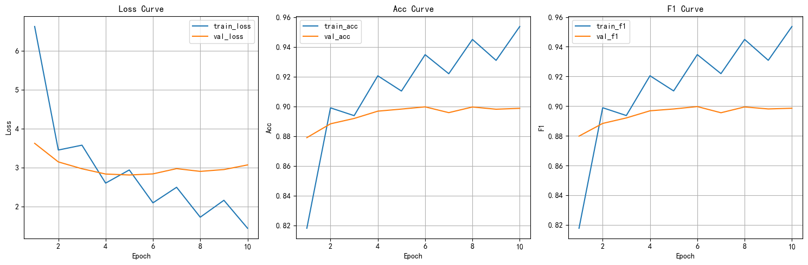
Evaluating: 100%|██████████| 157/157 [00:07<00:00, 19.72it/s]
教师模型测试结果: | 测试集 Loss: 0.2327 | 测试集 Acc: 0.9399 | 测试集 F1(macro): 0.9398
Evaluating: 100%|██████████| 157/157 [00:02<00:00, 67.62it/s]
学生模型测试结果: | 测试集 Loss: 0.8728 | 测试集 Acc: 0.9007 | 测试集 F1(macro): 0.9008
3.6 本小节总结
- 本小节主要介绍了模型蒸馏是什么，有几种方式可以实现蒸馏。
- 通过代码实现软标签蒸馏。
4 模型剪枝
学习目标
- 理解什么是模型剪枝.
- 了解模型剪枝的常用剪枝算法.
- 掌握模型剪枝的代码实现.
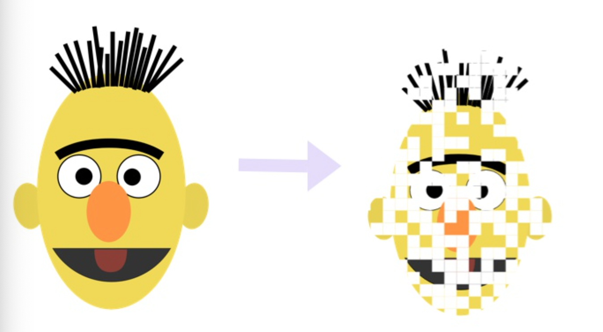
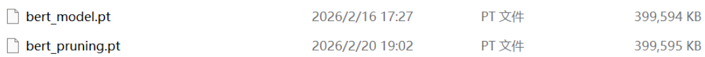
4.1 什么是模型剪枝
1 核心概念
模型剪枝（Pruning）：通过移除神经网络中不重要的参数，减小模型大小，同时保持性能。
核心思想：神经网络存在大量冗余参数，移除贡献小的参数不会显著影响性能。
类比理解：就像修剪树枝，去掉不重要的枝叶，主干仍能茁壮成长。
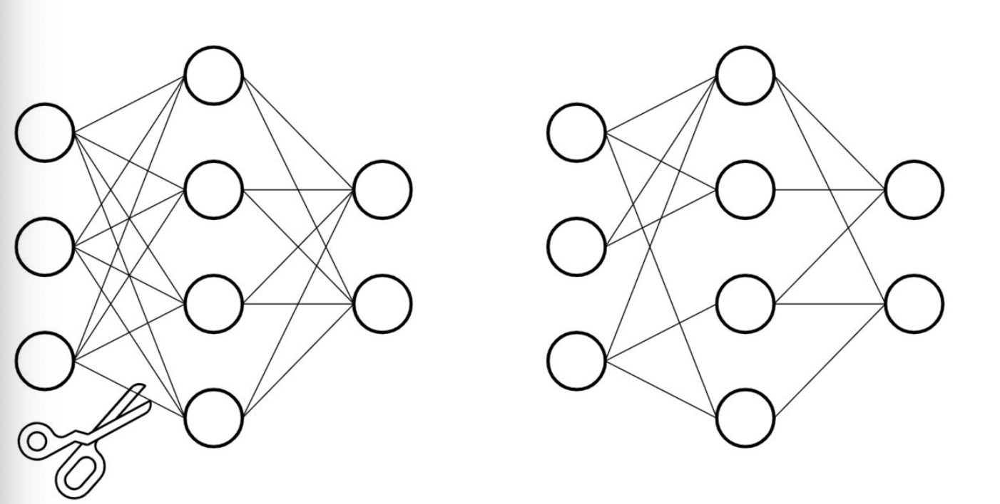
2 按照剪枝粒度分类
| 类型 | 剪枝单位 | 特点 | 典型场景 | 是否降低模型体积 |
|---|---|---|---|---|
| 非结构化剪枝 | 单个权重参数 | 细粒度，生成稀疏矩阵 | 测试阶段 | 否 |
| 结构化剪枝 | 整行/整列/整层 | 粗粒度，保持规则结构 | 工程主流 | 是 |
3 按照剪枝范围分类
| 类型 | 核心逻辑 | 工程使用场景 |
|---|---|---|
| 全局剪枝 | 对模型所有模块的参数统一排序、剪枝 | 追求全局最优稀疏率，适合小模型 |
| 模块级剪枝 | 对指定模块（如 Conv2d、Linear）单独剪枝 | 工程主流 |
4.2 常见剪枝算法
1 基于规则
通过简单的数学规则判断哪些参数不重要，直接移除，无需额外训练数据。
| 方法 | 核心思想 | 适用场景 |
|---|---|---|
| L1 范数剪枝 ⭐ | 移除绝对值 \|w\| 最小的权重 |
工程最常用，简单高效 |
| L2 范数剪枝 | 移除平方和 w² 最小的权重 |
适合大型 CNN |
| 随机剪枝 | 随机移除指定比例的权重 | 无价值 |
工程首选：L1 范数剪枝。
2 基于学习
通过数据驱动的方式自动决定剪枝策略，精度更高但成本也更高。
| 方法 | 核心思想 | 适用场景 |
|---|---|---|
| 敏感度分析 ⭐ | 逐层测试剪枝影响，优先剪不敏感的层 | 工程常用，针对性强 |
| AMC 强化学习剪枝 | 用强化学习在校验数据上自动搜索全局最优剪枝方案 论文 https://github.com/mit-han-lab/amc.git, API参考 https://nni.readthedocs.io/en/v2.6/Compression/v2_pruning_algo.html | 大规模生产环境，成本极高 |
工程首选：敏感度分析：循环剪枝每层并测精度，就能找到哪些层可以剪枝。
3 总结
主流工程最常用：L1 范数剪枝 + 敏感度分析
- L1 剪枝负责快速执行，敏感度分析负责确定每层剪多少
4.3 常用压缩顺序
- 剪枝-知识蒸馏-量化：先剪枝减少冗余参数，再通过知识蒸馏恢复精度，最后进行量化加速部署
graph LR;
模型优化-->剪枝;
剪枝-->蒸馏恢复精度;
蒸馏恢复精度-->量化PTQ/QAT;
量化PTQ/QAT-->推理引擎优化部署;
4.4 代码实现
模块：torch.nn.utils.prune
环境要求：PyTorch ≥ 1.4.0
BERT 全局非结构化剪枝：对所有 encoder 层注意力权重剪枝 30%，L1 范数。
""" 演示 BERT剪枝的实现过程，这里是全局非结构化剪枝。 对所有 encoder 层注意力权重剪枝 30%，L1 范数。 非结构化剪枝： 1.提高推理速度； 2.不能降低模型参数数量，只是把部分参数置为0 需要掌握的API: prune.gloabl_unstructured() """ # 导包 import os from torch.nn.utils import prune # pytorch的剪枝模块，提供各种剪枝方法 os.environ["TF_ENABLE_ONEDNN_OPTS"] = "0" from tqdm import tqdm # 可视化训练过程 import torch # pytorch框架 import torch.nn as nn # 神经网络模块 import torch.optim as optim # 优化器模块，提供各种优化器，比如SGD,Adam,AdamW from torch.utils.data import Dataset, DataLoader from transformers import BertModel, BertTokenizer, BertConfig # huggingface的transformers框架的具体模型方法 # from config import Config # 自定义的全局配置类 import time # from bert_train import * # 计算 accuracy准确率 和 F1(精确率和召回率的调和平均) from sklearn.metrics import accuracy_score, f1_score import matplotlib.pyplot as plt # 绘图 # 设置中文字体 plt.rcParams['font.sans-serif'] = ['SimHei'] # 微软雅黑 plt.rcParams['axes.unicode_minus'] = False # 解决负号显示问题 # 0.全局配置 # 创建Config()实例 config = Config() # 创建BERT模型对象，分词器对象，配置对象 bert_tokenizer = BertTokenizer.from_pretrained(config.bert_path) bert_config = BertConfig.from_pretrained(config.bert_path) # 1.定义函数，计算BERT模型的 Encoder层的 query权重的稀疏度，零值参数的占比 def get_sparsity(model): """ 计算BERT模型的 Encoder层的 query权重的稀疏度, 公式: 0值参数数量 / 总参数数量 :param model: 模型对象，这里是BERT下游微调模型 :return: 稀疏度，float32, 取值范围[0,1] """ # 1.定义变量，记录 总参数数量，0值参数数量，BERT中Encoder层的层数 total_params = 0 zero_params = 0 num_encoder_layers = len(model.bert.encoder.layer) # 12 # 2.遍历encoder层，计算query权重的稀疏度 for i in range(num_encoder_layers): # 1.获取当前encoder层的query权重张量 query_weight = model.bert.encoder.layer[i].attention.self.query.weight # 2.统计query权重的零值参数数量 zero_params += (query_weight == 0).sum().item() # 3.统计query权重的参数数量 total_params += query_weight.numel() # 3.返回稀疏度, 避免除以0 return zero_params / total_params if total_params > 0 else 0 # 2.进行模型剪枝 def prune_model(model): # 1.定义进行全局非结构化剪枝的参数，所有encoder层的query权重参数，列表 prune_params = [ (model.bert.encoder.layer[i].attention.self.query, 'weight') for i in range(len(model.bert.encoder.layer)) ] # 2.执行全局非结构化剪枝 # 参数1：prune_params，需要剪枝的参数列表 # 参数2：pruning_method，剪枝方法，这里使用全局非结构化剪枝，L1范数 # 参数3：amount，剪枝的比例，这里是30% prune.global_unstructured( prune_params, pruning_method=prune.L1Unstructured, amount=0.3 ) # # 随机剪枝 # prune.global_unstructured( # prune_params, # pruning_method=prune.RandomUnstructured, # amount=0.3 # ) # 3.固化剪枝，固定剪枝后的稀疏权重参数，删除剪枝的临时结果 for module, params in prune_params: prune.remove(module, params) # 4.保存剪枝后的模型参数 torch.save(model.state_dict(), config.bert_pruning_path) # 5.返回剪枝后的模型 return model # 测试 if __name__ == '__main__': # 1.创建数据加载器对象 train_dataloader, dev_dataloader, test_dataloader = build_dataloader() # 2.加载本地模型，剪枝前的模型 model = MyBertClassifier().to(config.device) # weights_only=True, 表示：只加载权重数据，不加载任何可执行对象，更安全，更适合模型部署 model.load_state_dict(torch.load(config.bert_model_save_path, weights_only=True)) test_loss, test_acc, test_f1 = evaluate(model, test_dataloader, loss_fn=nn.CrossEntropyLoss()) print(f"剪枝前模型测试结果: | " f"测试集 Loss: {test_loss:.4f} | " f"测试集 Acc: {test_acc:.4f} | " f"测试集 F1(macro): {test_f1:.4f}") # 剪枝前的稀疏度，一般是0，没有0权重 print(f"剪枝前的稀疏度: {get_sparsity(model):.4f}") # 3.进行模型剪枝 model = prune_model(model) # 4.测试剪枝后的模型 test_loss, test_acc, test_f1 = evaluate(model, test_dataloader, loss_fn=nn.CrossEntropyLoss()) print(f"剪枝后模型测试结果: | " f"测试集 Loss: {test_loss:.4f} | " f"测试集 Acc: {test_acc:.4f} | " f"测试集 F1(macro): {test_f1:.4f}") # 5.计算剪枝后稀疏度 print(f"剪枝后的稀疏度: {get_sparsity(model):.4f}")
Evaluating: 100%|██████████| 157/157 [00:07<00:00, 20.55it/s]
剪枝前模型测试结果: | 测试集 Loss: 0.2327 | 测试集 Acc: 0.9399 | 测试集 F1(macro): 0.9398
剪枝前的稀疏度: 0.0000
Evaluating: 100%|██████████| 157/157 [00:07<00:00, 20.56it/s]
剪枝后模型测试结果: | 测试集 Loss: 0.2330 | 测试集 Acc: 0.9391 | 测试集 F1(macro): 0.9390
剪枝后的稀疏度: 0.3000
4.5 总结
- 本部分完成了全局非结构化剪枝：对所有 encoder 层注意力权重剪枝 30%，L1 范数。
5 常见面试题
1 模型压缩的工程目标是什么？为什么需要模型压缩？
- 工程目标：在目标硬件（低资源设备）上，满足精度要求的前提下，最小化推理成本——速度最快、资源（算力/显存/功耗）最少。
- 需要原因：许多应用需要在资源受限的设备上实时运行（如摄像头、手机等），模型压缩可以让模型更小、更快、能耗更少。
2 量化的本质是什么？常见的量化方式有哪些？
- 本质：用近似值换性能，将高精度数据（float32）转换为低精度数据（int8/float16），从而减少模型大小和推理成本。
- 常见方式：
- QAT（量化感知训练）：训练时模拟量化误差，精度最好但成本最高
- PTQ（静态量化）：训练后用校准数据统计参数，精度稳定但需准备数据
- DQ（动态量化）：训练后直接量化权重，推理时实时计算激活参数，最简单无需校准数据
3 对称量化和min-max量化的区别是什么？
- 对称量化：量化值范围[-128,127]，zero_point=0，用于权重量化，公式简单
- min-max量化：量化值范围[0,255]，需计算zero_point，用于激活量化，考虑非对称分布
4 知识蒸馏的核心优势是什么？软标签相比硬标签有什么优势？
- 核心优势：模型大小减小10倍以上，推理速度提升5-10倍，精度损失控制在可接受范围内
- 软标签优势：保留教师模型的"不确定性信息"，学生可学到类别间的相似度关系，而硬标签只有确定的0或1
5 软标签蒸馏的损失函数为什么要加上T²项？
- 数学原因：KL散度对学生logits的梯度为 $\frac{1}{T}(p_s - p_t)$，加上T²后梯度变为 $T(p_s - p_t)$，能更好地平衡梯度尺度
- 工程原因：实验证明添加T²可以显著提高训练效果
6 非结构化剪枝和结构化剪枝有什么区别？工程中如何选择？
- 非结构化剪枝：删除单个权重参数，生成稀疏矩阵，能提高推理速度但不能降低模型参数数量
- 结构化剪枝：删除整行/整列/整层参数，保持规则结构，可降低模型体积，工程部署更友好⭐
- 工程选择：主要选结构化剪枝，非结构化剪枝一般用于测试
7 L1范数剪枝为什么是工程最常用的剪枝方法？
- 原因：实现简单（删除|w|最小的权重）、效果稳定、PyTorch原生支持、无需训练数据
- 应用：绝大多数工程项目的第一步剪枝都采用L1范数方法
8 模型压缩的完整工程流程是什么？
模型优化 → 剪枝/低秩分解 → 知识蒸馏恢复精度 → 量化(PTQ/QAT) → 推理引擎优化部署
- 这是主流工程流程，各环节的目的不同，可根据实际需求组合使用
9 蒸馏中α（软标签权重系数）和T（温度参数）如何设置？
- α通常取0.5-0.9，工业常用0.7，表示软标签和真实标签的权重比例
- T通常取2-10，值越大软标签越平滑，值越小差异越明显，推荐从4开始尝试
- 调参顺序：先固定α=0.7、T=4，再根据验证集结果细调
10 pytorch动态量化支持GPU吗？
- PyTorch的动态量化目前仅在CPU上实现，直接在GPU上量化会报错："only available for these backends: [QuantizedCPU]"
11 KL散度损失函数的计算公式是什么？
$$KL(p_t, p_s) = \sum p_t \log\frac{p_t}{p_s}$$
其中 $p_t = \text{softmax}(z_t/T)$ 是教师模型的软标签概率分布，$p_s = \text{softmax}(z_s/T)$ 是学生模型的软标签概率分布，$T$ 是温度参数。
解释：KL散度衡量两个概率分布之间的差距，用于衡量学生模型输出分布与教师模型输出分布的差距。值越小说明两个分布越接近。